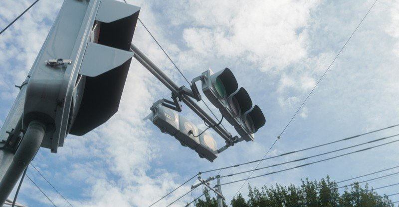

先週20日に完結したある漫画がある。
この情報だけで「あの漫画か」と思う方もいらっしゃるかもしれない。そう、Twitterを中心に話題を呼んだ「100日後に死ぬワニ」だ。
読んだことのある方はご存じだと思うが、主人公のワニが送る何気ない日常をほのぼのとした作風で描いた4コマ漫画だ。
仕事や恋愛、個性豊かな友人たちとの掛け合い。仕事中の同僚との話や片思いしている相手をデートに誘ったり、ほかにも仲の良い友人たちとラーメンを食べに行く描写もある。なんてことのない風景は読者にもありふれた毎日として受け止められている。
しかし、ほかの漫画と決定的な違いがある。それは4コマ目の下に書かれた「死まで〇日」という言葉だ。
これを見た時ぞっとした気分になったり、はたまた4コマで描かれたよくある日常が違った風に見えてきたり、色々な感情がごちゃまぜになって迫ってくる。
死ぬことは、やっぱり怖い。
でも、そんな当たり前の事実に向き合う時間すらないほど、現代で生きることは目まぐるしいことなのかもしれない。
漫画が完結した翌日。
作者のTwitterアカウントから書籍化や映画化、いきものがかりがタイアップした漫画の主題歌などが発表され、読者の間では漫画完結前から裏で企業が動いていたのではないかとして炎上した。
作者も動画配信で弁明するなどの騒ぎになったが、こうした作品外の騒動で作品自体の価値が下がることはないと思う。フィクションといえどワニが4コマの世界で生きていたのは事実だし、「死」の期日を知っていた第三者目線の読者に向けて、どのような「死」が描かれるのかが注目されていたのも事実だった。それほどまでに「ワニ」の物語には多くの人に響くメッセージがあった。
作者も今回のメディア展開による炎上がここまでの広がりを見せるとは思ってなかったのではないか。それは作者の想像をはるかに超えた読者数、なにより100日間ワニの生活を見てきた読者の熱が強かったからだと勝手に解釈している。
今後どのような形で書籍化や映画化をされてもワニが生き返ることはない(はず)。ワニの死を目にした経験をどう受け止め、まだある命を全うするのか。
「死」という遠い未来の話だった存在が少しずつ足音を立てながら近づいてきてしまっている今、ワニはこの瞬間を生きる意味さえ教えてくれている。